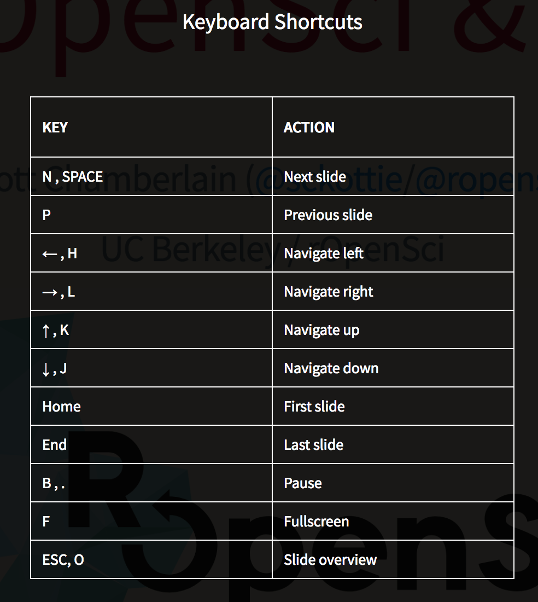

Biodiversity and Taxonomy Software Tools in R
Scott Chamberlain (@sckottie/@ropensci)
UC Berkeley / rOpenSci


scotttalks.info/bocc
pdf slides 960x720
pdf slides 1280x720
LICENSE: CC-BY 4.0
Keyboard shortcuts: press ?

rOpenSci Does
rOpenSci Staff
ropensci.org/about/#team
~5 full time
leadership team
advisory board
Taxonomy
taxa - Taxonomic classes and taxonomically aware data manipulation
taxize - Taxonomic "toolbelt" - work w/ taxonomy web APIs
taxizedb - taxize, but with local SQL databases
rentrez - NCBI's Entrez services
biomartr - Biomart R client
genbankr - Parse GenBank files into useful objects
rsnps - SNPs data retrieval
Taxonomic IDs
always try to move from:
taxonomic name -- to
taxonomic ID -- to
whatever other data